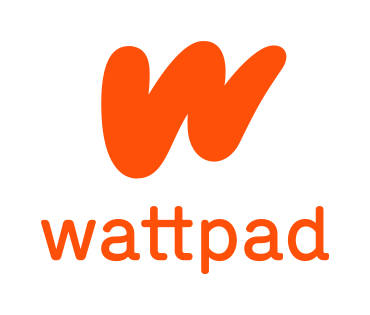

Quick Access
{kind=link}
Ebook Resources
Project Gutenberg
Project Gutenberg is a volunteer-driven digital library offering free access to over 60,000 eBooks, mostly consisting of classic literature and public domain works. It aims to make these texts freely available to anyone with an internet connection, contributing to the ultimate goal of preserving and sharing knowledge.
Founded by Michael S. Hart in 1971, it is one of the oldest digital libraries on the web. Users can read or download eBooks in various formats like plain text, HTML, or ePub.
OpenLibrary
Open Library is an initiative by the Internet Archive that aims to create a web page for every book ever published. It provides access to millions of books, both modern and historical, allowing users to borrow digital copies through a virtual library system. Open Library works to make books more accessible, fostering greater opportunities for learning and education worldwide.
Founded in 2006, Open Library allows users to borrow eBooks, access scanned versions of books, and explore a vast collection of resources. The project is part of the larger Internet Archive, which is dedicated to preserving and providing access to digital content across a wide range of media.
LibriVox
LibriVox is a free, volunteer-driven platform that provides audiobooks of public domain texts. It offers thousands of audiobooks, ranging from classic literature to historical works, all recorded by volunteers from around the world. LibriVox aims to make these books accessible to everyone, especially for those who prefer listening to reading.
Founded in 2005, LibriVox allows users to listen to audiobooks for free, with the option to download them in various audio formats. The project encourages people to contribute by narrating, proof-listening, or editing books, creating a global community of audiobook creators and listeners.
Apple Books
For those with Apple devices, Apple Books is both an eReader and an eBook and audiobook shopping platform. Apple Books also includes a large collection of free public domain books, allowing users to enjoy timeless literature at no cost. It integrates seamlessly with iOS, iPadOS, and macOS, providing a convenient way to access and enjoy reading material across all Apple devices.
Developer's note: This is the one I use the most!
Indie Works Resources
r/NoSleep
r/NoSleep is a popular subreddit on Reddit where users share creepy and suspenseful stories, often written in the first person. The stories are designed to be immersive and unsettling, creating a chilling atmosphere for the readers.
The unique aspect of r/nosleep is that the posts are typically written as if they are true, even though they are works of fiction. Users are encouraged to engage with the stories as if they were real, adding to the eerie experience. Some authors even reply to comments made by users!
Developer's note: This is a personal favorite. If you are a fan of horror stories, this is a gold mine!
Wattpad
Wattpad is a popular platform for reading and writing stories, particularly well-known for its vast collection of user-generated content. It has a massive following, especially in the Philippines, where it is a go-to site for both amateur and aspiring writers. Writers can share their stories on various genres, and the platform has launched some stories into mainstream media adaptations.
While Wattpad has a large and active community, most stories are hit or miss, as is common with indie works. Some of the stories can be incredibly well-written, while others may not meet everyone's tastes. This is part of the charm of being an open platform where anyone can publish their work. It’s also a space where young writers can experiment and grow.
Developer's note: Personally, I don't use Wattpad, as I prefer other platforms. However, it's undeniable that it has created a significant impact in the digital storytelling world, especially for readers and writers in the Philippines. Each to their own, I guess.
Archive of Our Own
Archive of Our Own (AO3) is a nonprofit, open-source platform for fanfiction and other fanworks. It was launched in 2008 by the Organization for Transformative Works (OTW), a nonprofit organization dedicated to supporting fan culture and providing a space for creators to share their work freely. Much like Wattpad, AO3 allows users to publish and share their stories, but it caters to a broader audience, including fans of all kinds of media, from books and movies to video games and TV shows.
AO3 allows users to post and archive a wide variety of fan-created content, including fanfiction, fanart, and fan videos. It is known for its inclusive policies, large collection of fandoms, and robust tagging system that helps users find content of interest. The site is accessible to everyone and allows fan creators to retain control over their works.
The website has gained popularity for its ease of use, customization options for content and visibility, and a strong community atmosphere. AO3 also provides a platform for discussions around fandom, fan practices, and the transformative nature of fanworks.